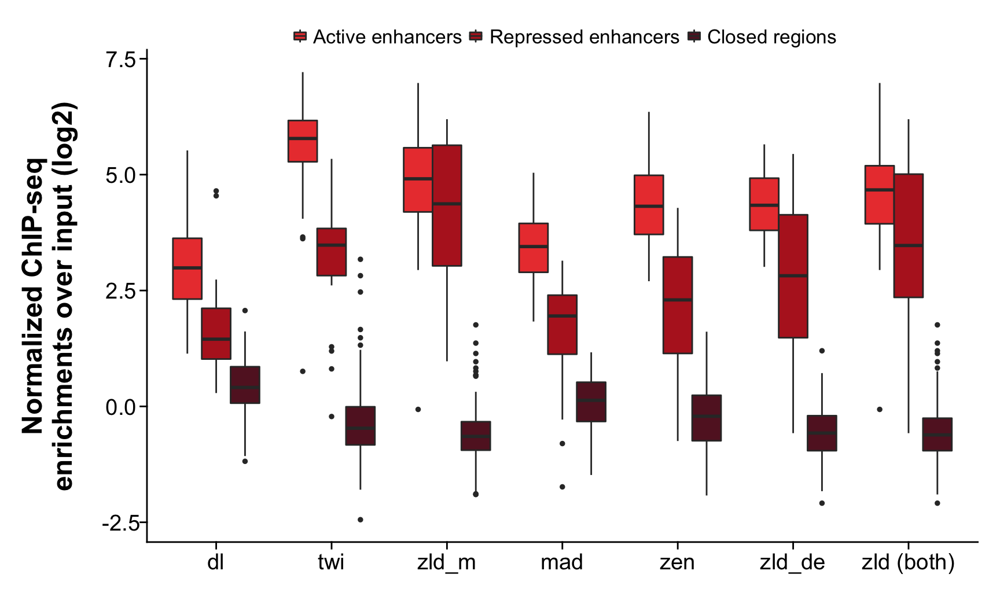
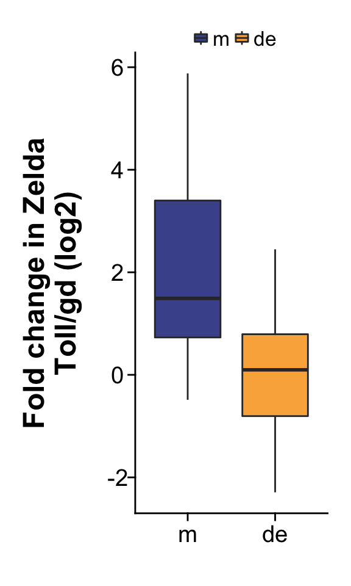

Project: Repressed Enhancers
Author: Jeff Johnston
Generated: Sun Aug 14 2016, 09:17 PM
Closed regions are putative enhancer regions active in the late (14-16h AEL) embryo but not active in the early embryo (2-4h AEL). These are defined by the following criteria:
| tissue | factor | replicate | median_enrichment |
|---|---|---|---|
| de | mad | 1 | 3.038479 |
| de | mad | 2 | 5.177029 |
| de | zen | 1 | 9.342235 |
| de | zen | 2 | 7.635403 |
| de | zld | 1 | 5.955312 |
| de | zld | 2 | 13.786509 |
| m | dl | 1 | 5.401049 |
| m | dl | 2 | 1.716881 |
| m | twi | 1 | 38.093264 |
| m | twi | 2 | 10.393152 |
| m | zld | 1 | 12.369055 |
| m | zld | 2 | 29.327038 |
| tissue | factor | best_median_enrichment | replicate |
|---|---|---|---|
| de | mad | 5.177029 | 2 |
| de | zen | 9.342235 | 1 |
| de | zld | 13.786509 | 2 |
| m | dl | 5.401049 | 1 |
| m | twi | 38.093264 | 1 |
| m | zld | 29.327038 | 2 |

| factor | active_vs_repressed_pvalue | repressed_vs_closed_pvalue | active_n | repressed_n | closed_n |
|---|---|---|---|---|---|
| dl | 2.880601e-05 | 8.909524e-09 | 37 | 22 | 100 |
| twi | 4.477966e-10 | 4.881017e-12 | 37 | 22 | 100 |
| zld_m | 4.226042e-01 | 2.837505e-13 | 37 | 22 | 100 |
| mad | 9.748400e-09 | 1.203969e-11 | 22 | 37 | 100 |
| zen | 2.415323e-09 | 6.802985e-15 | 22 | 37 | 100 |
| zld_de | 7.193996e-04 | 1.557375e-15 | 22 | 37 | 100 |
| zld (both) | 1.648338e-04 | 1.775730e-27 | 59 | 59 | 200 |

| Test | n | pvalue |
|---|---|---|
| Wilcox two-sided | 59 | 7.406498e-06 |
For reproducibility, this analysis was performed with the following R/Bioconductor session:
R version 3.3.1 (2016-06-21)
Platform: x86_64-apple-darwin13.4.0 (64-bit)
Running under: OS X 10.12 (Sierra)
locale:
[1] en_US.UTF-8/en_US.UTF-8/en_US.UTF-8/C/en_US.UTF-8/en_US.UTF-8
attached base packages:
[1] stats4 parallel grid stats graphics grDevices utils
[8] datasets methods base
other attached packages:
[1] readr_1.0.0 rtracklayer_1.32.2 GenomicRanges_1.24.2
[4] GenomeInfoDb_1.8.3 IRanges_2.6.1 S4Vectors_0.10.2
[7] BiocGenerics_0.18.0 digest_0.6.10 yaml_2.1.13
[10] pander_0.6.0 magrittr_1.5 dplyr_0.5.0
[13] ggplot2_2.1.0 setwidth_1.0-4
loaded via a namespace (and not attached):
[1] Rcpp_0.12.6 RStudioConsoleRender_0.1.0
[3] formatR_1.4 plyr_1.8.4
[5] XVector_0.12.1 bitops_1.0-6
[7] tools_3.3.1 zlibbioc_1.18.0
[9] evaluate_0.9 tibble_1.1
[11] gtable_0.2.0 DBI_0.5
[13] rstudioapi_0.6 stringr_1.0.0
[15] knitr_1.14 Biostrings_2.40.2
[17] Biobase_2.32.0 R6_2.1.2
[19] BiocParallel_1.6.5 XML_3.98-1.4
[21] rmarkdown_1.0.9001 GenomicAlignments_1.8.4
[23] Rsamtools_1.24.0 scales_0.4.0
[25] htmltools_0.3.5 SummarizedExperiment_1.2.3
[27] assertthat_0.1 colorspace_1.2-6
[29] labeling_0.3 stringi_1.1.1
[31] lazyeval_0.2.0 RCurl_1.95-4.8
[33] munsell_0.4.3